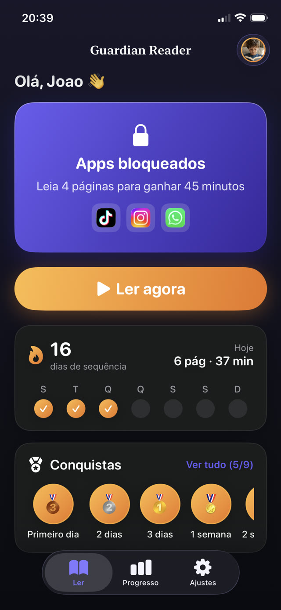
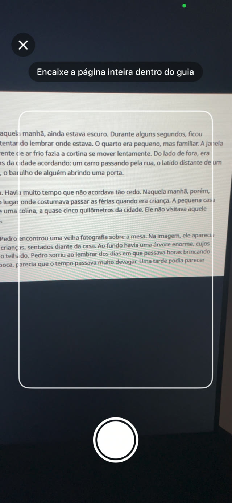
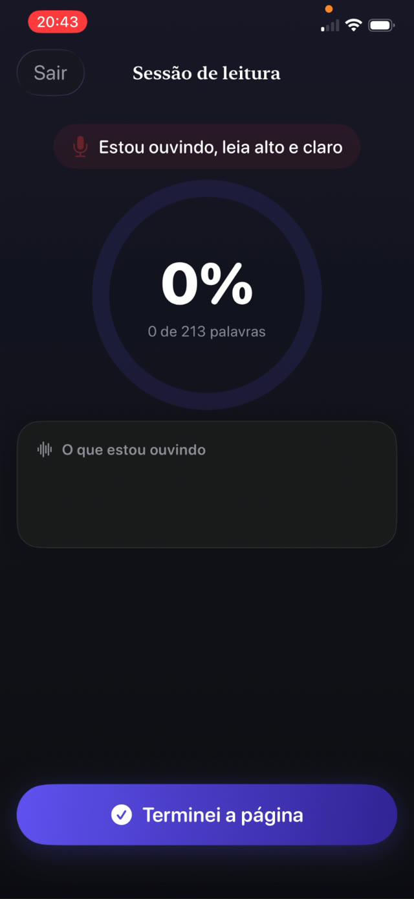
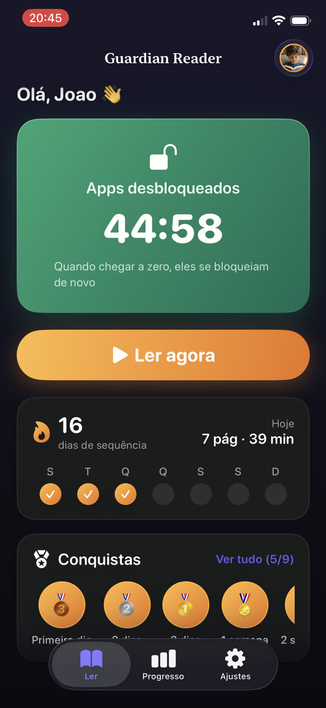
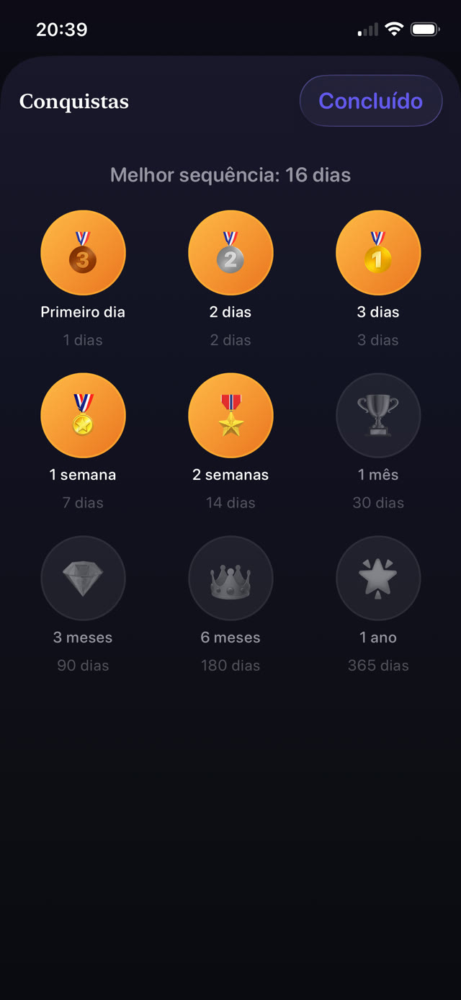
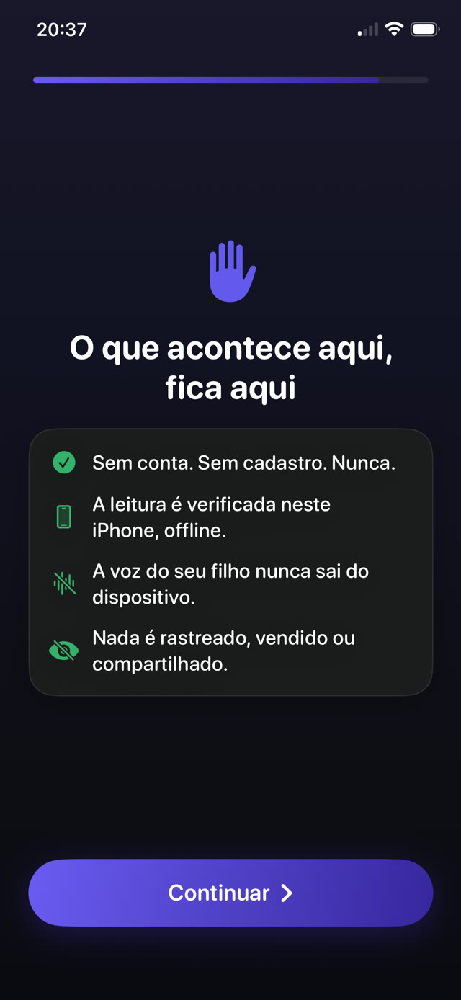

O controle parental que ouve seu filho ler.
O Guardian Reader bloqueia os apps que você escolher. Seu filho lê um livro de verdade em voz alta, o iPhone confere cada palavra, e o tempo de tela conquistado é liberado. Sem força de vontade, nem a dele nem a sua.
Grátis · Para o iPhone da criança, iOS 18+ · Sem contas, sem rastreamento · 9 idiomas


Ler para jogar.
O Guardian Reader coloca um livro de verdade entre seu filho e os apps dele. Algumas páginas lidas em voz alta, conferidas palavra por palavra, e a tela abre.
iPhone · iOS 18+ · Grátis: leitura verificada + um app bloqueado · Premium com 7 dias grátis
Dentro do app
Bloqueie apps até a leitura estar feita.
Um controle parental e um treinador de leitura em um só. Seu filho usa sozinho; quem confere é o iPhone.
Verificação ao vivo
Veja a conferência, palavra por palavra.
Enquanto seu filho lê em voz alta, o app compara o que ouve com as páginas digitalizadas e a porcentagem sobe ao vivo. Esta é uma sessão real, lendo um livro de papel para um iPhone. Ler de verdade fica bem acima da nota mínima; falar de outra coisa fica perto de zero.
Ler em voz alta é o exercício →
Digitalize as páginas
Qualquer livro de papel vira a chave.
Seu filho fotografa todas as páginas que vai ler, uma foto por página, e depois lê tudo de uma vez, como um livro de verdade. Só conta o texto dentro da guia de enquadramento, e uma página já digitalizada naquela sessão é rejeitada automaticamente.
Como fazer seus filhos lerem mais →
Antifraude
Pega os atalhos que as crianças realmente usam.
Sem quiz para adivinhar, sem sistema de confiança. O que ele diz é comparado com as páginas exatas que escaneou, em ordem, então folhear, improvisar ou dizer que já leu não passa. Tropeços e erros pequenos passam: verifica que leu, não que foi perfeito. Um controle define o quanto o mínimo é exigente.
Como funciona conquistar tempo de tela →
A recompensa
Passe na leitura. Desbloqueie o telefone.
Os apps abrem exatamente pelos minutos conquistados, com uma contagem regressiva à vista. Ao chegar a zero eles se bloqueiam sozinhos, aplicado pelo sistema Tempo de Uso da Apple, mesmo com o Guardian Reader fechado.
Como limitar YouTube e TikTok →
Regras dos pais
Você define o preço da troca.
Páginas que entram, minutos que saem: uma página vale cerca de 15 minutos dos 4 aos 6 anos, até quatro páginas por cerca de 45 minutos para adolescentes. O plano sugere um ponto de partida pela idade, e todo número pode ser mudado atrás de um PIN dos pais separado do código do telefone.
Regras de tempo de tela que funcionam →
Progresso e sequências
Medalhas que fazem ele voltar.
Sequências, estrelas e medalhas para a criança; páginas por dia, mês e ano para você. O Premium acrescenta um relatório em PDF de cada sessão: data, minutos, porcentagem e o texto que ele realmente leu, pronto para entregar na escola.
Um registro de leitura para a escola →
Privado por construção
Um microfone apontado para uma criança precisa se explicar.
A câmera lê a página, o microfone transcreve a leitura, e os dois funcionam só no aparelho. Sem conta, sem servidor, sem analytics, sem SDKs de terceiros: a voz nunca sai do iPhone e tudo funciona offline.
Leia a política de privacidade completa →How it works
Quatro passos. Nada para negociar.
Configure uma vez com seu filho. Depois disso o acordo funciona sozinho: o limite mora no app, não na sua voz.
Bloqueie os apps
Escolha os apps ou categorias inteiras para bloquear, como YouTube, TikTok ou jogos, e proteja os ajustes com o seu PIN dos pais.
Digitalize as páginas
Seu filho fotografa as páginas do livro de verdade que vai ler, uma foto por página.
Leia em voz alta
Ele lê tudo de uma vez enquanto o iPhone escuta e confere cada palavra com o texto digitalizado.
O tempo de tela é liberado
Se passar na leitura, os apps abrem pelos minutos conquistados. No zero, eles se bloqueiam sozinhos.
Guides
Ajuda para as partes difíceis.
Guias práticos sobre tempo de tela, bloquear apps e fazer as crianças lerem, e como usar o Guardian Reader em cada um.
Como fazer seus filhos lerem mais
Sete abordagens que funcionam com uma criança que prefere a tela, e a única que não exige força de vontade sua.
Ler o guia Tempo de telaComo as crianças podem conquistar tempo de tela lendo
Transformar o tempo de tela em algo conquistado em vez de esperado, e como fazer a regra pegar sem ficar fiscalizando.
Ler o guia Controle parentalComo bloquear apps no iPhone do seu filho
O que o Tempo de Uso consegue e o que não consegue, onde as crianças acham as brechas, e como fechá-las de vez.
Ler o guia YouTube · TikTokComo limitar YouTube e TikTok para crianças
Por que limites de tempo sozinhos falham contra feeds infinitos, e o que colocar na frente do app.
Ler o guia FluênciaPrática de fluência de leitura em casa
O que os professores querem dizer com fluência, por que ler em voz alta é o exercício, e como encaixar dez minutos numa noite comum.
Ler o guia Regras da famíliaRegras de tempo de tela que funcionam de verdade
Por que a maioria das regras de tela da família desaba em duas semanas, e as três propriedades que as sobreviventes têm em comum.
Ler o guiaFAQ
Perguntas, respondidas.
Como o Guardian Reader confere que meu filho leu mesmo o livro?
Meu filho consegue enganar fingindo que leu?
Uma voz de IA pode ler a página no lugar do meu filho?
Instalo o Guardian Reader no meu telefone ou no do meu filho?
Quais apps posso bloquear no iPhone do meu filho?
O Guardian Reader grava a voz do meu filho?
Que livros funcionam com o app?
Para que idade é o Guardian Reader?
Quanto custa o Guardian Reader?
Consigo um registro de leitura para a escola?
Funciona sem internet?
Meu filho pode simplesmente desinstalar o app ou mudar os ajustes?
Hoje à noite, a leitura vem primeiro.
Dois minutos de configuração. Seu filho lê em voz alta, conquista o tempo de tela dele, e você deixa de ser o vilão.
Baixar naApp StoreGrátis · Sem anúncios, sem contas, sem rastreamento